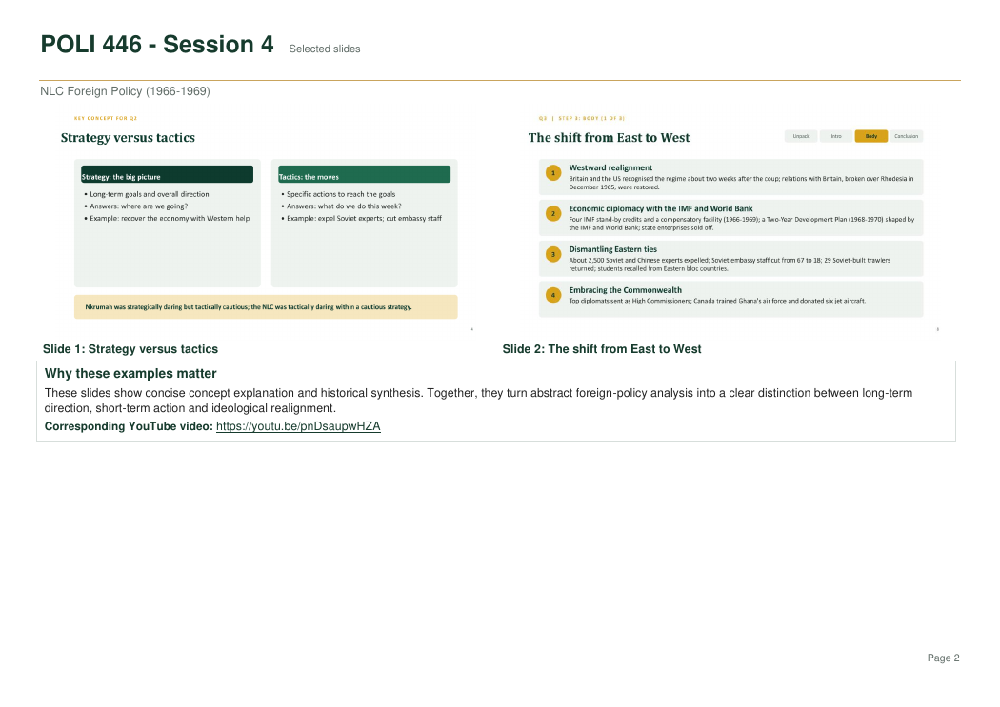
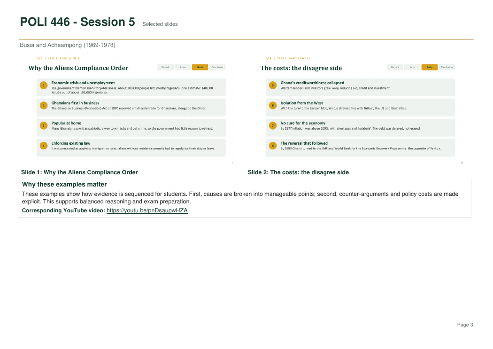
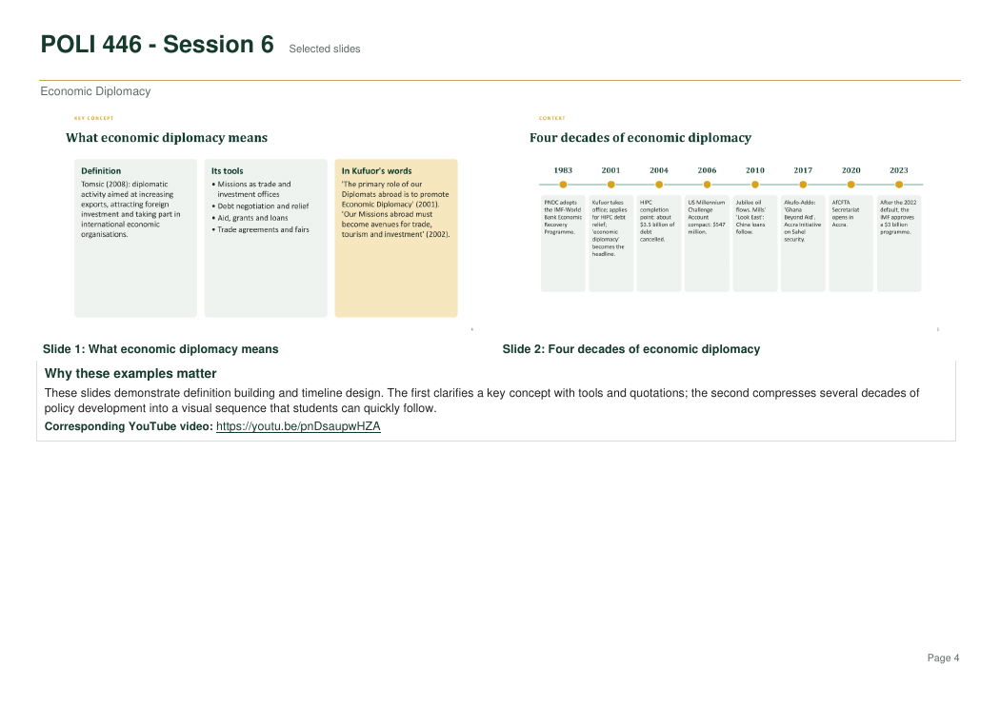

Research and Content Review
Reviewing academic information, organizing concepts and helping ensure educational accuracy.
EDUCATIONAL COMMUNICATION · DIGITAL MEDIA
Making research, data and academic concepts easier to understand through presentation design, content development and video editing.
ABOUT MY WORK
Since August 2025, I have contributed to Kwadwo Fosu Inspires by developing research-based presentation slides, reviewing educational content and editing videos on political science, research methods, statistics and student-support topics.
My contributions focus on communicating information accurately, organizing complex concepts and presenting educational material in accessible visual formats.
with clearly identified collaborative contributions
MY CONTRIBUTIONS
Reviewing academic information, organizing concepts and helping ensure educational accuracy.
Creating research-based slides and structuring information for student learning.
Using charts, diagrams and presentation layouts to explain complex ideas.
Supporting the production and editing of educational video content.
MY WORKFLOW
COLLABORATIVE REACH
The educational channel reported the following overall audience metrics as of October 2026:
Channel-level figures from collaborative work, as of October 2026.
PRESENTATION DESIGN
These three examples come from the selected educational content portfolio. The slides were developed collaboratively for Kwadwo Fosu Inspires; my contributions include slide development, content review and video editing.
View Selected Educational Content (PDF)



VIDEO CONTENT
The selected educational content document identifies the corresponding lesson and credits the collaborators.
Explore the corresponding published lesson. My documented contributions include research-based slide development, content review and video editing. Channel lead and presenter: Edmund Kwadwo Fosu.
Watch the selected lesson on YouTube →EXPLORE MORE
Visit Kwadwo Fosu Inspires to explore the channel's published educational videos and learning resources.
Selected collaborative presentation samples are available above. Channel-level work is credited to the team.
Visit Kwadwo Fosu Inspires on YouTube →
Visit Kwadwo Fosu Inspires Explore My Technical Projects